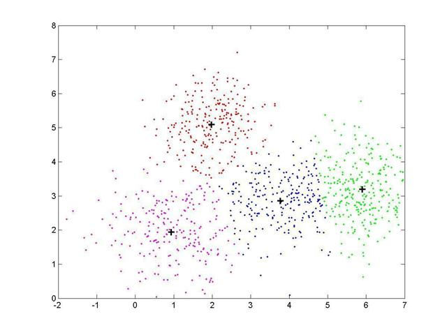
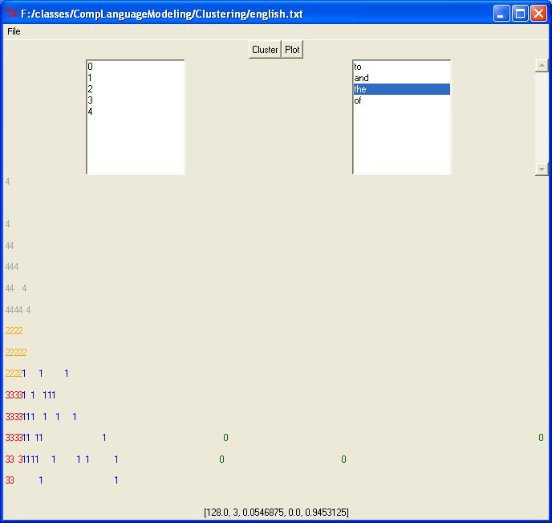

K-means clustering is an algorithm to separate multidimensional data into subclasses. The number of subclasses, must be specified to run the algorithm. K-means is an iterative algorithm which groups together things that are closest together. For example the following picture is of two dimensional data with 4 subclasses. K-means will work on data which is any number of dimensions as long as all data points have the same number of dimensions.

This application allows the user to load a text file and creates a 5 dimensional vector for each word in the file. Then, the user can cluster the words based on these 5 dimensional vectors. The vector is as follows:
[frequency, length, startSentence, endSentence, middleSentence]
The parameters of the vector are defined as follows:
*Note: To determine if a word is at the beginning, end or middle of a sentence, sentences are found by looking for a period, question mark, or exclamation point ( . ! ?). It is assumed that these mark the ends of sentences. I do look for one exception. If the words mr or mrs have periods following them, it assumed that these do not the mark ends of sentences. Therefore other abbreviations may cause problems. Cases where a question mark is not at the end of a sentence because it is in a quotation including the following:
"What did you get for Christmas?", John asked.
would also not be handled correctly. It is assumed that these cases would not occur very often and should not change the results very much.
This application needs the python interpreter to run. First make sure that python is installed and that your path includes the python executable. To run the application, first download the three files to a folder on your computer. From inside this directory type the following:
python ClusteringApp.py
Doing so will bring up a window similar to this:

From the menu select File -> Open and select a text file to open. Then click the cluster button and finally the plot button. Depending on the size of the file, the cluster function may take quite a bit of time. The plot consists of only the first two dimensions of the data. The y-axis is word length and the x-axis is word frequency. Each number in the plot represents a word and if two words have the same number they are in the same subclass and they are also shown on the plot in the same color. Clicking on the numbers in the left hand select box will show the corresponding words in that category. These words will appear in the select box in the upper right corner of the window. Clicking on a word will show the corresponding vector at the bottom of the window.